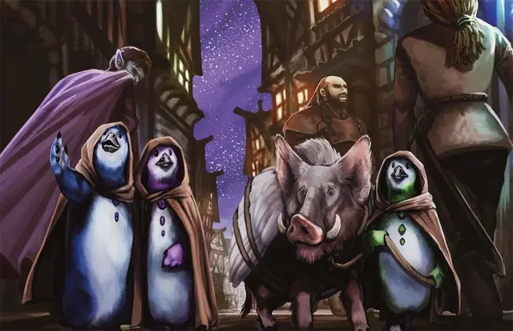

Довар
Dohwar
Маленькая Фея, любое мировоззрение

Класс Доспеха 11
Хиты 10 (3к6)
Скорость 20 футов, плавая 20 футов
| мод | спас | ||
|---|---|---|---|
| СИЛ | 5 | −3 | −3 |
| ЛОВ | 12 | +1 | +3 |
| ТЕЛ | 11 | +0 | +0 |
| мод | спас | ||
|---|---|---|---|
| ИНТ | 11 | +0 | +0 |
| МДР | 14 | +2 | +4 |
| ХАР | 13 | +1 | +1 |
Навыки Обман +3, Проницательность +4, Убеждение +3
Чувства пассивное Восприятие 12
Языки Общий, Доварский, Телепатия 30 фт. (смотри также слияние ниже)
Опасность 0
Бонус мастерства +2
Особенности
Слияние. Два довара могут вести телепатическую беседу друг с другом и с третьим согласным существом по своему выбору, если все трое находятся в пределах 30 футов друг от друга.
Действия
Укус. . Рукопашная атака оружием: +3 к попаданию, досягаемость 5 фт., одна цель. Попадание: 3 (1к4 + 1) колющего урона.
Использование заклинаний (псионика). Базовой характеристикой довара является Харизма (Сл спасброска от заклинаний 11). Он может накладывать следующие заклинания, не нуждаясь ни в каких в компонентах.
• 3/день: обнаружение мыслей [detect thoughts];
Описание
Довары — это коротконогие, пузатые, нелетающие пернатые, которые выглядят и двигаются как пингвины. Они заядлые торговцы, всегда ищущие возможность получить прибыль. Довары ведут дела тайно, предпочитая вести бизнес в тёмных переулках и малолюдных местах, даже если покупаемые или продаваемые предметы не являются незаконными или опасными. Одеваются они, как правило, в пестрые одежды, но многие из них также любят заворачиваться в плащи с капюшонами. Группа доваров называется картелем.
Типичный довар вырастает до 3 футов в высоту и носит яркое оперение. Вместо крыльев у них руки и крошечные кисти.
Довары предпочитают общаться с помощью особого вида телепатии, которую они называют слиянием: два довара поддерживают ментальный контакт, в то же время они оба телепатически связаны с третьим существом.
У доваров свой пантеон божеств, состоящий исключительно из богов торговли и богатства. К этим божествам относятся Вокин, Аббатор и Зилхус. Сосредоточившись на поклонении этим божествам, довары надеются стать лучшими торговцами во вселенной, стараясь не обделить или оскорбить ни одного из этих богов.